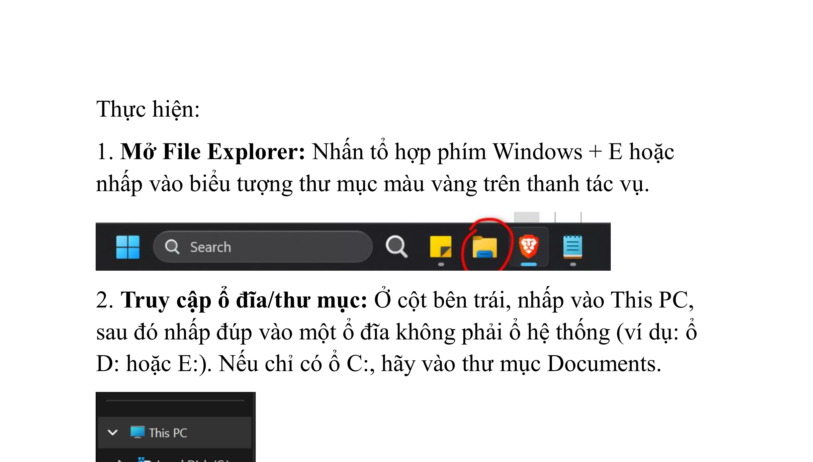
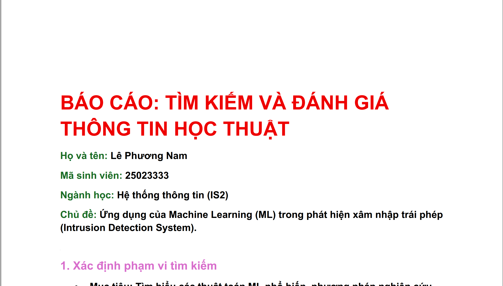
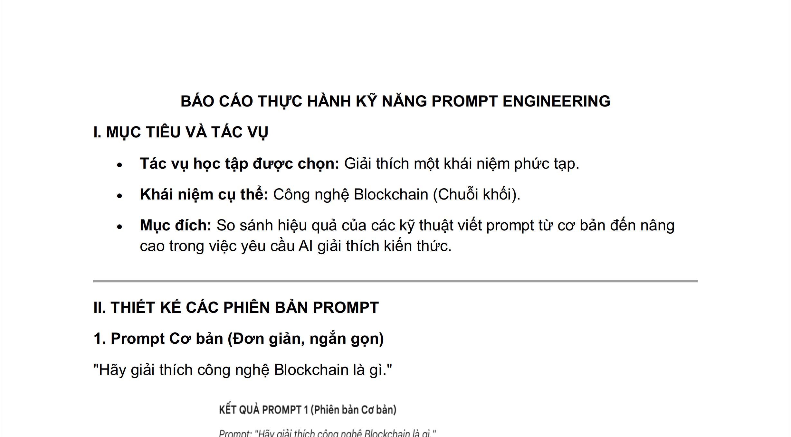
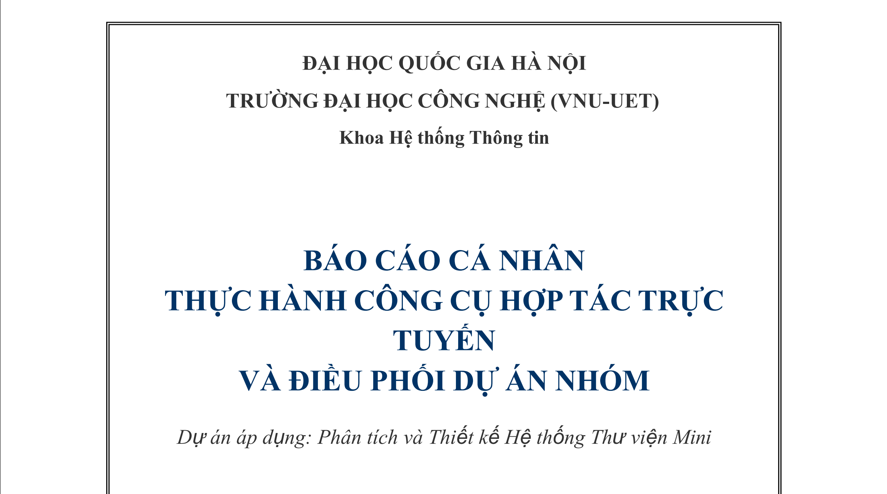
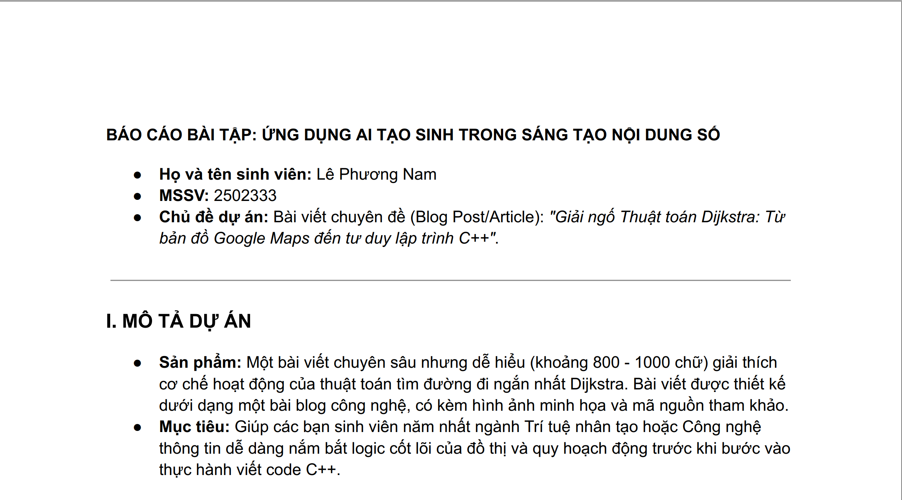
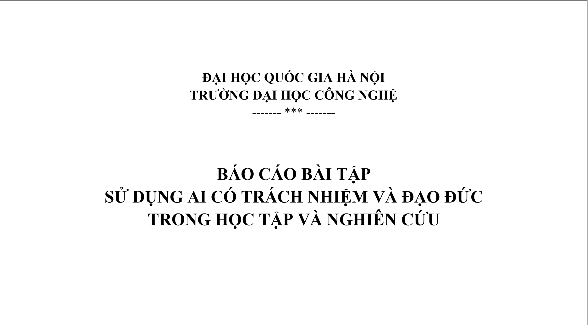

Xin chào, mình là
Sở thích: công nghệ, đồ điện tử, cơ sở dữ liệu, hệ thống
Định hướng: Về định hướng phát triển cá nhân, lộ trình nghề nghiệp mà mình đang theo đuổi là trở thành một Data Engineer (Kỹ sư Dữ liệu). Mục tiêu ngắn hạn của mình là trang bị đầy đủ kiến thức và kỹ năng để tìm kiếm một cơ hội thực tập chất lượng vào năm thứ ba đại học.
Chi tiết quá trình thực hiện các bài tập môn học.

Hiểu và thực hành quản lý tệp tin hiệu quả. Trình bày cấu trúc thư mục tối ưu và tuân thủ các quy tắc đặt tên tệp rõ ràng, khoa học.
Tiến hành thiết lập một cấu trúc cây thư mục logic phục vụ cho việc học tập nhiều môn học khác nhau. Áp dụng các quy tắc đặt tên tệp thống nhất (ví dụ: TenMon_BaiTap_HoTen) và chụp ảnh minh họa lại quá trình này.
Xem Minh Chứng (PDF)
Thành thạo sử dụng các toán tử tìm kiếm nâng cao để tra cứu tài liệu học thuật và biết cách đánh giá độ tin cậy của các nguồn thông tin.
Sử dụng các nền tảng như Google Scholar, kết hợp các toán tử (AND, OR, ngoặc kép "", site:) để lọc kết quả. Sau đó, lập bảng phân tích, đánh giá các nguồn thông tin thu thập được dựa trên tính chính xác, tính khách quan và độ uy tín.
Xem Minh Chứng (PDF)
Tương tác hiệu quả với các công cụ Trí tuệ nhân tạo (Generative AI) bằng cách viết lời nhắc (Prompt) tối ưu, rõ ràng và có đầy đủ ngữ cảnh.
Thực hiện so sánh kết quả sinh ra giữa một prompt cơ bản (ngắn gọn, thiếu ngữ cảnh) và một prompt đã được cải tiến (áp dụng các nguyên tắc đóng vai, nêu rõ yêu cầu, định dạng đầu ra). Phân tích sự vượt trội về chất lượng câu trả lời từ AI.
Xem Minh Chứng (PDF)
Áp dụng thành thạo các công cụ làm việc nhóm trực tuyến để quản lý tiến độ, chia sẻ tài nguyên và duy trì giao tiếp hiệu quả trong dự án.
Khởi tạo không gian làm việc trên công cụ quản lý dự án, tiến hành phân công nhiệm vụ rõ ràng cho từng thành viên. Sử dụng Google Docs/Drive để chỉnh sửa tài liệu đồng thời, phối hợp trực tuyến và lưu lại các minh chứng làm việc nhóm.
Xem Minh Chứng (PDF)
Khai thác tiềm năng của AI tạo sinh (sinh văn bản, hình ảnh) để tối ưu hóa và hỗ trợ quá trình sáng tạo nội dung số phong phú.
Sử dụng AI để gợi ý ý tưởng, phác thảo cấu trúc bài viết và hỗ trợ tạo ra các thành phần nội dung số (ví dụ: hình ảnh minh họa). Sau đó, tiến hành chỉnh sửa, biên tập lại để tạo ra sản phẩm hoàn thiện mang dấu ấn cá nhân.
Xem Minh Chứng (PDF)
Nhận thức sâu sắc về các vấn đề đạo đức, liêm chính học thuật khi ứng dụng AI và xây dựng được bộ nguyên tắc cá nhân trong việc sử dụng.
Nghiên cứu các rủi ro tiềm ẩn như đạo văn, thiên kiến thuật toán, thông tin sai lệch. Từ đó, xây dựng một bản tuyên ngôn/bộ nguyên tắc cá nhân cam kết về việc sử dụng AI một cách minh bạch, có trách nhiệm và tôn trọng bản quyền.
Xem Minh Chứng (PDF)Đúc kết lại những giá trị cốt lõi và kinh nghiệm quý giá sau chuỗi nhiệm vụ.
Quá trình xây dựng Portfolio và thực hiện các bài tập thực sự là một hành trình thú vị. Nó không chỉ giúp mình hệ thống hóa lại toàn bộ kiến thức đã học mà còn tạo ra một sản phẩm thực tế để tự nhìn nhận lại sự phát triển kỹ năng số của chính mình.
Mình đánh giá cao nhất kỹ năng Viết Prompt (Prompt Engineering) và kỹ năng Đánh giá thông tin học thuật. Đây là hai công cụ cốt lõi giúp mình khai thác tri thức trong thời đại số một cách nhanh chóng nhưng vẫn đảm bảo sự chính xác và tin cậy.
Khám phá ra rằng AI là một trợ thủ vô cùng đắc lực, giúp tiết kiệm thời gian đáng kể nếu ta biết cách kiểm soát và sử dụng nó một cách có trách nhiệm.
Thử thách lớn nhất là việc biên tập lại nội dung của 6 bài tập sao cho súc tích, dễ hiểu và trình bày trên Portfolio một cách chuyên nghiệp, đẹp mắt nhất. Tuy nhiên, thách thức này đã giúp mình cải thiện đáng kể tư duy thiết kế và tổng hợp thông tin.